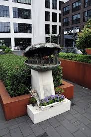

| Naast de fysieke wederopbouw was het ook belangrijk om de verschrikkingen niet te vergeten. Daarom zijn er in de loop van de tijd diverse monumenten gemaakt. De belangrijkste in het kader van de speurtocht zijn: | |
| 
×
|
Operation Oyster, ter herinnering aan alle mensen die zijn omgekomen tijdens het Sinterklaasbombardement. |
|
×
|
Oorlogs- en Bevrijdingsmonument, ter nagedachtenis aan mensen in of uit Eindhoven die zijn omgekomen tijdens de Tweede Wereldoorlog. |